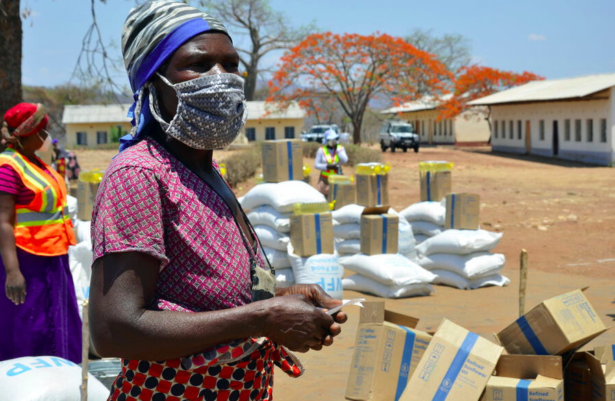

Famine has become one of the most problem that our people are facing due to drought and crops diseases and we can overcome it by raising up organizations with different agendas such for food distribution
The children also are affected from deficiency diseases that are caused by the lack of certain essential nutrients,especially vitamins and minerals in one`s diet over a prolonged period of time,due to this problem we started form organizations against it by providing health care,clean water and proper sanitation.